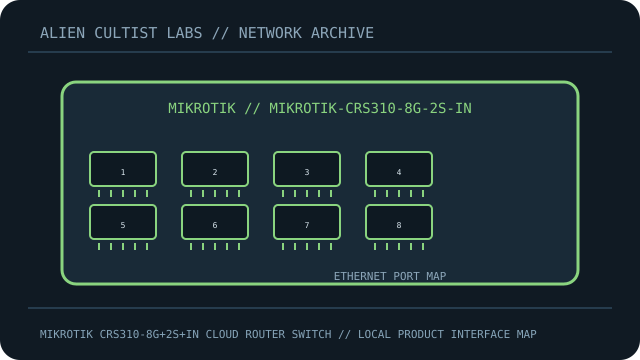

[ MODEL-SPECIFIC NETWORK HARDWARE ]
MikroTik CRS310-8G+2S+IN Cloud Router Switch
Compact RouterOS/SwOS switch combining eight 2.5GbE copper ports and two 10G SFP+ cages. This record is limited to the exact named model; revisions and regional SKUs may differ.

MODEL IDENTIFICATION: Match the complete model number and revision on the manufacturer label before applying specifications. Published link rates are nominal, not measured application throughput.
Published specifications and compatibility
| Exact product | MikroTik CRS310-8G+2S+IN Cloud Router Switch |
|---|---|
| Archive subcategory | Managed switches |
| Physical ports | 8 × 2.5GbE RJ-45 and 2 × 10G SFP+ cages. |
| Host / chassis interface | Standalone switch; DC input 12–57V. Port 1 supports PoE-in according to MikroTik product specifications. |
| Standards / protocol | RouterOS v7 or SwOS management; Ethernet switch chip, VLAN and bridge features depend on software/configuration. |
| Rated link and switching rates | 2.5Gb/s per copper port and 10Gb/s per SFP+ port; advertised 80Gbps switching capacity. |
| Power and thermal notes | 12–57V DC input; PoE-in on Ethernet port 1. Use only a supply supported by the exact hardware documentation and label. |
| Firmware / driver | RouterOS v7 or SwOS; use MikroTik’s supported software and reset/configuration process for the selected operating mode. |
| Compatibility guidance | SFP+ transceiver/DAC selection must match fiber, reach, wavelength and far-end device. Verify RouterOS/SwOS release and feature support before deployment; a switch product is not a full-featured router by default. |
Model-specific deployment notes
The CRS310-8G+2S+IN is distinguished by eight 2.5GbE RJ-45 ports and two SFP+ slots. The “+” in 8G+ denotes the multi-gigabit copper version.
For a reproducible speed or interoperability test, record both link-partner models, cable/media, firmware, negotiated rate and test method. No benchmark is claimed in this archival record.
Manufacturer sources and documentation
- MIKROTIK — official MikroTik CRS310-8G+2S+IN Cloud Router Switch product specificationsManufacturer product page/specification reference for this model.
- MIKROTIK — official support, manual or compatibility resourcesUse revision- and region-specific documentation for firmware, installation, media and compatibility decisions.
Source specifications describe rated capability; verify the label and current manufacturer documentation before purchase or deployment.